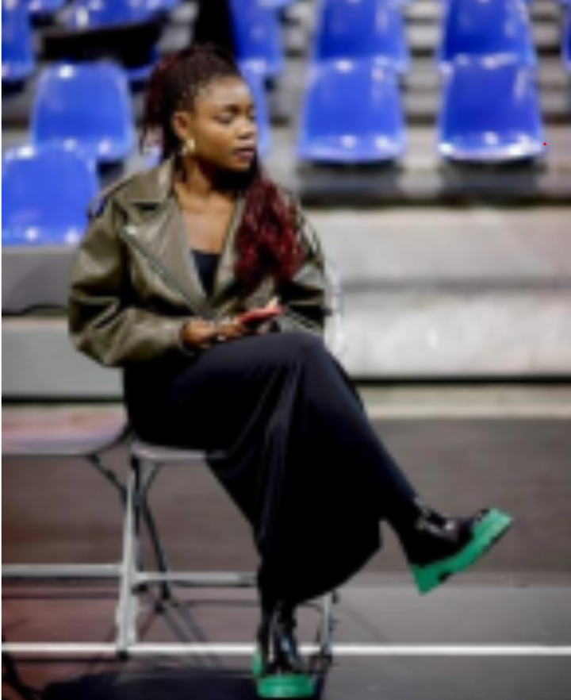
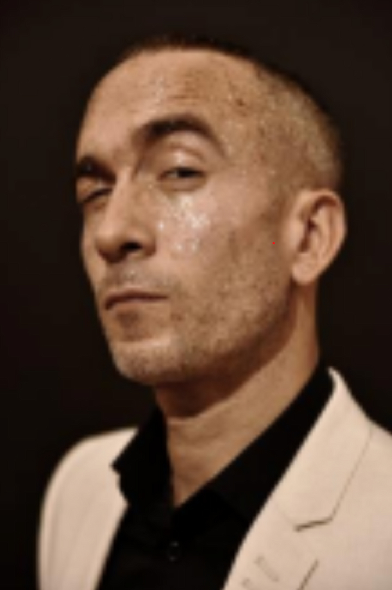
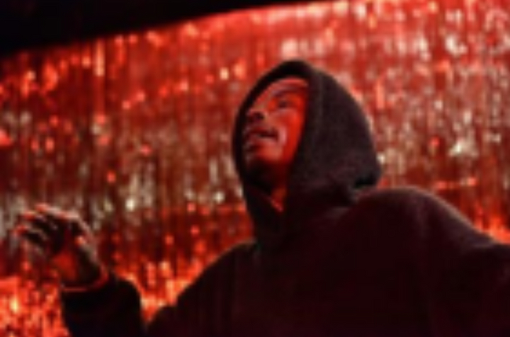
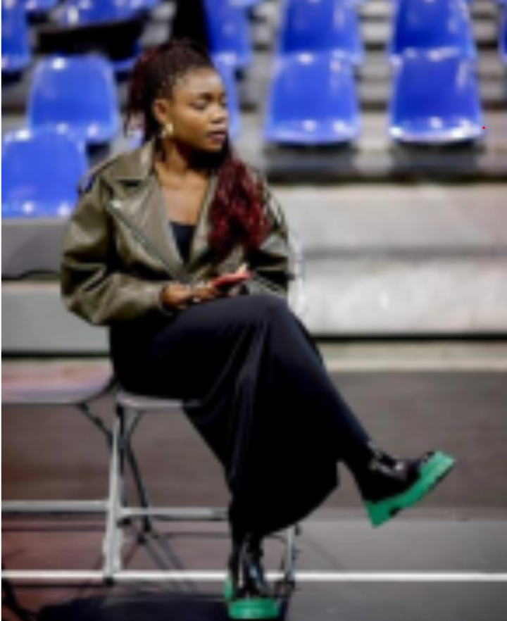
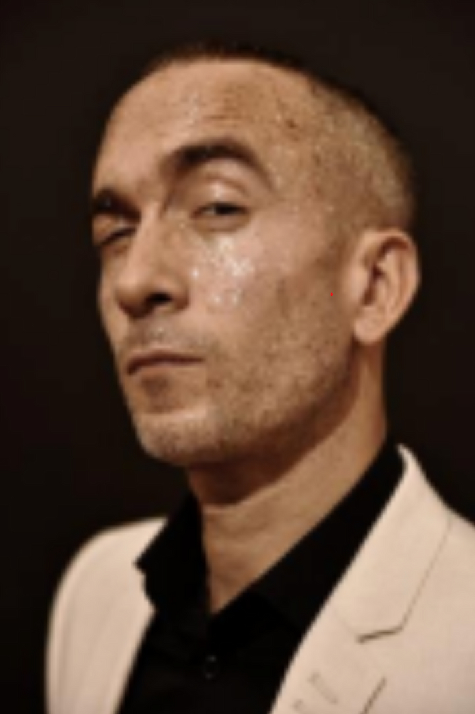
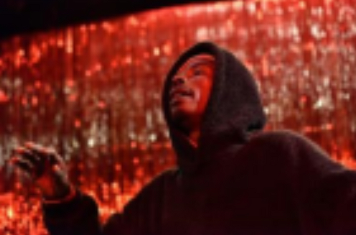

About Bosangani Festival
PILLIERS DU PROJET
PÉDAGOGIE / Masterclass pour de jeunes artistes loca.ux.les et internationaux données par des artistes « mentors » invité.e.s, qui seront suivies d'une présentation publique dans les rues de Kinshasa.
Le thème de la première édition était “L'union”. Puis « Mettre en valeur les femmes sur la scène congolaise » pour l'édition de 2022. Et pour l'édition 2023 le thème choisi etait « KIN LA BELLE ». Sur ce pour la quatrième édition nous aimerions parler de la royauté « Le royaume Congo ». À l'époque, du Moyen âge jusqu'au début du temps moderne, l'Afrique était repartie par des royaumes. Au centre, où se situe le Congo, y régnait le Royaume Kongo. Un royaume fort, audacieux, remplis de fougue, protecteur de ces terres et paisible. Cela nous tenait à cœur de parler de cette époque-là ; une époque révolue et quasiment oubliée dans la mémoire collective congolaise actuelle, par manque d'une pédagogie adaptée aux valeurs locales.
Nous avons décidé d'ouvrir les anciennes armoires et parler de notre histoire. Une histoire passée de nos arrières et arrière grands-parents, remplie de merveilles et de sagesse communiquées via la tradition orale, de bouche à l'oreille… Histoires racontées (Nous sommes fièr.e.s, pour cette édition, de revenir là où tout a commencé) renouer avec ce passé flou de l'histoire du royaume Congo. En effet, “bosangani”, en lingala, signifie “se réunir” pour faire quelque chose de bien ou de mal ; mais pour notre part, il s'agit de faire du bien pour tous. Et nous mettons donc l'accent, pour cette quatrième édition, sur l'histoire à travers la formule de l'écoute du savoir. Aussi, la curiosité des artistes est vivement souhaitée vis-à-vis du thème ; ils sont appelés à effectuer de la recherche en vue d'étendre leur champ de la connaissance.
Nous nous sommes intéressés, durant toutes ces dernières années, à des artistes qui participent au festival, en leur proposant d'être accompagné.e.s dans leur progression par des artistes de renommée internationale désigné.e.s comme « mentors ». Nous voulons rassembler cette année une équipe de plus ou moins six mentors (congolais et étrangers).
ARTISTIQUE
- Représentations de spectacles nationaux et internationaux. Cinq spectacles nationaux seront présentés au festival cette année. Des spectacles qui ont été suivis par l'asbl AUC Production, en disposant un espace de travail, aux artistes, un 2 accompagne au mieux pour l'aboutissement et la confection d'un produit fini. Les mentors internationaux invités cette année sont : Élie Autin, Mamutshi, Bui Ngoc Quan, Marlène Saldana, Jonath Drillet, Léonce Noah, Horacio Macuacua. Ils présenteront leur spectacle lors du festival et certains dirigeront de nouvelles créations avec les jeunes artistes congolais.e.s. L'idée serait de mettre en place une plateforme, de ces artistes, qui développe des rencontres professionnelles et des projets avenir lors du festival.
- Meer info
MÉDIATION
- / Rencontres, débats et conversations, workshops entre artistes invité.e.s et artistes loca.ux.les. BOSANGANI se veut être une initiative artistico-culturelle. Cet évènement rassemble plusieurs sortes de disciplines artistiques allant de la danse aux arts visuels, de la performance à l'improvisation. Afin de faciliter la création de telles performances et œuvres, BOSANGANI invite des chorégraphes, Comédien.nes, musicien.nes et artistes plastiques établis en Afrique et en Europe en tant que panélistes de discussions et/ou de conférences. Pouvoir proposer des perspectives et des contextes culturels différents est une véritable richesse pour les jeunes artistes de Kinshasa. Les différentes discussions couvriraient des sujets tels que le combat des préjugés propres aux différentes disciplines, régions et expériences, ainsi que l'influence de l'environnement culturel sur la pratique artistique.
DIVERSIFICATION DE PUBLICS /
- Au Menu : Battles de jeunes danseu.r.se.s pratiquant la danse urbaine. Cette année comme l'année passée, nous souhaitons faire concourir une dizaine de groupes dans le cadre de « battles » avec une prime d'encouragement à la clé. Il s'agit ici de motiver ces jeunes artistes et de les mettre dans des conditions de représentations publiques. Ces jeunes s'exercent généralement dans la rue et n'ont que très rarement l'opportunité de promouvoir leurs créations chorégraphiques dans le cadre d'un évènement professionnel.
- Meer info
OBJECTIFS DU PROJET
Objectifs généraux liés au projet.
Pédagogique : -Organiser des rencontres entre des artistes locaux et internationaux et engager un travail de collaboration ;
-Organiser des workshops abordant des méthodes spécifiques de création telles que l’écriture, l’histoire de la danse, les techniques de scénographie, et bien d’autres.
Objectifs spécifiques du festival
- -Promouvoir, auprès du grand public, des productions artistiques interdisciplinaires et des arts vivants naturellement remarqués partout dans les rues de Kinshasa
- - Élargir les horizons de jeunes artistes en les mettant en relation les un.e.s avec les autres, par la création d’un réseau
- -Développer les compétences artistiques de participant.e.s par le biais des rencontres et mentorats avec des artistes expérimenté.e.s d’ici et d’ailleurs
- - Suivre les jeunes artistes, de manière appuyée, et les encourager dans leurs projets personnels
- - Renforcer la présence des artistes femmes, population très peu représentée sur la scène artistique locale
- - Mettre un espace de travail à disposition des artistes
- - Permettre des échanges intellectuels entre les participant.e.s, les publics, les mentors et les panelistes
- - Promouvoir les créations d’artistes congolais.es auprès des directeurs et directrices invités
- - Enrichir les processus de création par le croisement de différentes disciplines artistiques.
LOCALISATION
Le festival aura lieu dans plusieurs lieux mais principalement à l’Institut Français de Kinshasa, cette année, où nous allons nous baser afin d’organiser les workshops, les Masterclass, les concerts et spectacles. Nous prévoyons de faire des conférences débats, au centre Wallonie Bruxelles, et d’autres représentations et projections de vidéos documentaires seront organisées. Nous descendrons aussi dans les rues avoisinantes de Kinshasa pour rencontrer les mamans vendeuses de coins de rues. Le commerçant ambulant, porteur des marchandises sur la tête pour vendre dans les rues de Kinshasa, communément appelé « chayeurs », en lingala, sera aussi fréquenté ; cela dans l’idée d’aller à la rencontre d’un public varié qui n’a pas l’habitude de voir ce genre de spectacle.
DIRECTION ARTISTIQUE
Jolie Ngemi, danseuse urbaine et traditionnelle de base, est la Directrice artistique de Bosangani. Elle est née et a grandi à Kinshasa. Il y a quelques années, Jolie a eu l’opportunité de se former en tant qu’interprète de danse contemporaine à P.A.R.T.S. (Bruxelles). Elle a par la suite travaillé en Europe (France, Suisse et Belgique, New-York), pendant plusieurs années, avec différent.e.s chorégraphes. Elle est à présent installée en Suisse où elle chorégraphie et produit ses propres créations. Au terme de plusieurs années de pratique, elle est devenue professeure de danse à l’Académie d’Amsterdam, à l’ECD à Londres, au Tictac art centre à Bruxelles et à la Manufacture (HETSR) à Lausanne CH. Elle garde cependant des liens personnels et professionnels avec la ville de Kinshasa, et le territoire de la République Démocratique du Congo de manière plus large. Elle a fondé le festival BOSANGANI et connait bien les difficultés fréquemment rencontrées par les artistes congolais, que ce soit au niveau de la pénurie d’espaces de travail ou de la difficulté de récolter des financements pour leurs arts. Il était donc essentiel pour elle que les participant.e.s puissent être logé.e.s, rémunéré.e.s et encadré.e.s correctement durant le festival et les formations. Ce festival vise également à promouvoir des valeurs primordiales telles que le respect de l’autre et de soi-même, le partage et l’éveil de la curiosité, des consciences, de l’échange de connaissances et l’empathie ainsi que l’amour du prochain. Nous envisageons BOSANGANI comme un évènement fédérateur entre les institutions et artistes qui forment ensemble le terreau de la création artistique congolaise.
PHILOSOPHIE
Thème de 2024
« LE ROYAUME CONGO », Faire renaître la passion des arts ancestraux, en général, remettre cette âme de la curiosité de la lecture de l’histoire de nos anciens au sein des jeunes artistes et plus qu’évident. Nous avançons dans une ère de la vitesse technologique et nous en oublions les fondamentaux. Qu’en est-il de nos traditions ; de la communication de bouche à l’oreille, de nos histoires, des bases culturelles ?
La clochardisation de la danse avec des participations, en subalterne, d’artistes danseur.e.s, dans des clips vidéo de musique, généralement de la Rumba ou du Ndombolo doit être mise sur la sellette, questionnée afin de remettre le domaine de la danse et de l’histoire ancienne de la danse Congolaise à sa place d’antan. Remettre et rendre l’approche professionnelle à sa place avec des jeunes qui seront là pour la continuité et non la rupture après avoir atteint l’Eldorado (l’Europe). L’envie de danser est aujourd’hui évincée par le manque de perspectives dû aux pesanteurs socioéconomiques et politiques du pays engendrant la paupérisation de la société dans toutes ses couches ; cela a pour conséquences la désertification de la scène au profit de rien, car les quelques bourgeons qui émergent disparaissent de la scène kinoise après avoir foulé le sol européen. Au-delà des accompagnements et encadrements de danseuses, il y aura des formations orientées vers des administrateurs de groupes et compagnies, avec des accompagnements théoriques et pratiques, qui permettront de maitriser l’administration dans le domaine culturel et artistique ; aussi, l’encadrement professionnel axée sur l’éthique, la déontologie et la conscience professionnelles. Car au Congo il y a un manque criant d’accompagnement administratif. D’où ces ateliers de formation, visant à former les administrateurs en devenir fera office de sécurité d’un futur proche au jeunes artistes congolais.e.s.
Invited Artists
 




